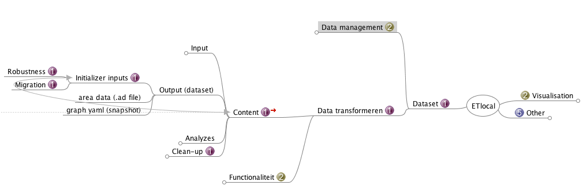
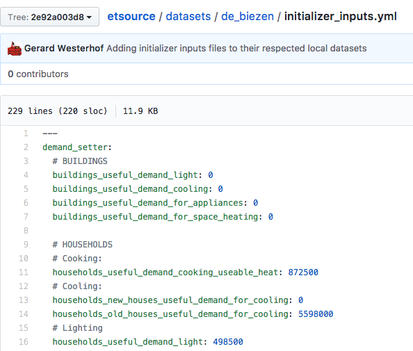
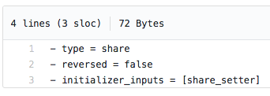

class: center, middle # ETLocal ## Sprint meeting --- # Agenda 1. Overview 2. What did we do the previous sprint? 3. What didn't we do? 4. What are we going to do? --- # Overview:  --- # What did we do the previous sprint? - Technically re-designing the transformations - Cleaning up and re-evaluating the initializer inputs - Prototyped a more robust version of the initializer inputs --- # What didn't we do? - Implement a full (households) analysis *Why?* The analysis lean heavily on the foundation of the initializer inputs. If the initializer inputs are instable, so will the analysis. We need one stable set of "initializer inputs" (the MECE set)! --- class: center, middle # What are we going to do? --- # (Previous) Project deliverables + preliminary planning To eliminate the use of Excel: <table cellpadding='4' border='1' style="border-collapse: collapse; font-size: 70%;"> <tbody> <tr> <td> <td><strong>Households</strong></td> <td><strong>Buildings<strong></td> <td><strong>Industry</strong></td> <td><strong>Agriculture + Other</strong></td> <td><strong>Supply</strong></td> <td><strong>Transport</strong></td> </tr> <tr> <td><strong>Excel</strong></td> <td style="background-color: green;">1</td> <td>0~</td> <td>0?</td> <td>0?</td> <td>0?</td> <td>0?</td> </tr> <tr> <td><strong>Discussion</strong></td> <td style="background-color: green;">0</td> <td>1</td> <td>1</td> <td>1</td> <td>1</td> <td>1</td> </tr> <tr> <td><strong>Schematic</strong></td> <td style="background-color: green;">3</td> <td>3</td> <td>3</td> <td>3</td> <td>3</td> <td>3</td> </tr> <tr> <td><strong>Code design</strong></td> <td style="background-color: yellow;">2</td> <td>1</td> <td>1</td> <td>1</td> <td>1</td> <td>1</td> </tr> <tr> <td><strong>Discussion code design</strong></td> <td style="background-color: yellow;">1</td> <td>0</td> <td>1</td> <td>0</td> <td>1</td> <td>1</td> </tr> <tr> <td><strong>Code implementation</strong></td> <td>3</td> <td>2</td> <td>2</td> <td>2</td> <td>2</td> <td>2</td> </tr> <tr> <td><strong>Merging</strong></td> <td>0.5</td> <td>0.5</td> <td>0.5</td> <td>0.5</td> <td>0.5</td> <td>0.5</td> </tr> <tr> <td><strong>Bugs</strong></td> <td>1</td> <td>1</td> <td>1</td> <td>1</td> <td>1</td> <td>1</td> </tr> </tbody> <tfoot style="background-color: #ccc;"> <tr> <td><strong>Total</strong></td> <td><strong>7.5</strong></td> <td><strong>8.5</strong></td> <td><strong>9.5</strong></td> <td><strong>8.5</strong></td> <td><strong>9.5</strong></td> <td><strong>9.5</strong></td> </tr> <tr> <td><strong>Sprints</strong></td> <td><strong>1</strong></td> <td><strong>1</strong></td> <td><strong>1</strong></td> <td><strong>1</strong></td> <td><strong>1</strong></td> <td><strong>1</strong></td> </tr> </tfoot> </table> (6 sprints + 1) x 2 weeks = 14 weeks ~ done by the end of november --- # (New) Project deliverables + preliminary planning To eliminate the use of Excel: <table cellpadding='4' border='1' style="border-collapse: collapse; font-size: 70%;"> <tbody> <tr> <td> <td><strong>Households</strong></td> <td><strong>Buildings<strong></td> <td><strong>Industry</strong></td> <td><strong>Agriculture + Other</strong></td> <td><strong>Supply</strong></td> <td><strong>Transport</strong></td> </tr> <tr> <td><strong>Initializer inputs robustness</strong></td> <td colspan="6" style="background-color: yellow;">Pending (5 days)</td> </tr> <tr> <td><strong>General discussion transformer</strong></td> <td colspan="6" style="background-color: yellow;">Pending (2 days)</td> </tr> <tr> <td><strong>Code implementation transformer</strong></td> <td colspan="6" style="background-color: orange;">Prototyping (4 days)</td> </tr> <tr> <td><strong>Bugs regarding transformer</strong></td> <td colspan="6" style="background-color: red;">Not started (3 days)</td> </tr> <tr> <td><strong>Excel</strong></td> <td>1</td> <td>0~</td> <td>0?</td> <td>0?</td> <td>0?</td> <td>0?</td> </tr> <tr> <td><strong>Updating nodes and edges</strong></td> <td>3</td> <td>2</td> <td>2</td> <td>2</td> <td>2</td> <td>2</td> </tr> <tr> <td><strong>Merging / Review</strong></td> <td>0.5</td> <td>0.5</td> <td>0.5</td> <td>0.5</td> <td>0.5</td> <td>0.5</td> </tr> </tbody> <tfoot style="background-color: #ccc;"> <tr> <td><strong>Total</strong></td> <td><strong>4.5</strong></td> <td><strong>2.5</strong></td> <td><strong>2.5</strong></td> <td><strong>2.5</strong></td> <td><strong>2.5</strong></td> <td><strong>2.5</strong></td> </tr> <tr> <td><strong>Sprints</strong></td> <td><strong>1</strong></td> <td><strong>1</strong></td> <td><strong>1</strong></td> <td><strong>1</strong></td> <td><strong>1</strong></td> <td><strong>1</strong></td> </tr> </tfoot> </table> (5 sprints + 1) x 2 weeks = 13 weeks ~ done by the beginning of november --- # Initializer inputs robustness Current situation: - Initializer inputs are set from L → R in the graph - Initializer inputs have double book-keeping :( - Renaming a node/edge breaks the initializer inputs without the specs actually failing --- # Idea (1/2): *"Initializer methods"* - Setting demand / setting shares / updating number of units to specific nodes/edges - Update those nodes and edges directly  --- # Idea (2/2): **Whitelist all 'editable' nodes/edges (enforce the MECE set):** *households_collective_chp_biogas-households_final_demand_steam_hot_water@steam_hot_water.ad*  *Goals:* - Removes double book-keeping - Easier to validate if a local dataset is broken --- # Parts that needs changing: - Change Atlas (https://github.com/quintel/atlas/pull/100) (1 day) - Teach what the new initializer methods format looks like - Validation of nodes/edges whitelisting - Update ETEngine (https://github.com/quintel/etengine/pull/945) (1 day) - Teach how to alter the graph with the initializer methods - Update ETSource (https://github.com/quintel/etsource/pull/1328) (3 days) - Migration of existing local datasets - Whitelist nodes/edges; which one's can be changed by an initializer method (Enforce the MECE set) --- # Planning - Coming friday I'm not here - Sprint lasts 6.5 days - Next sprint meeting: 18 september, 10:00